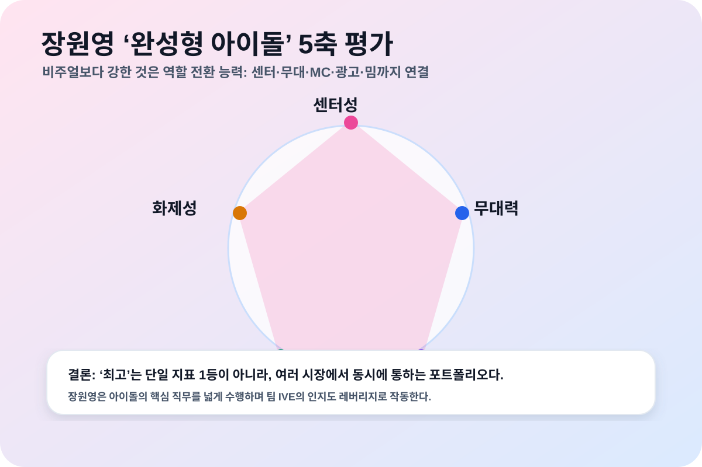
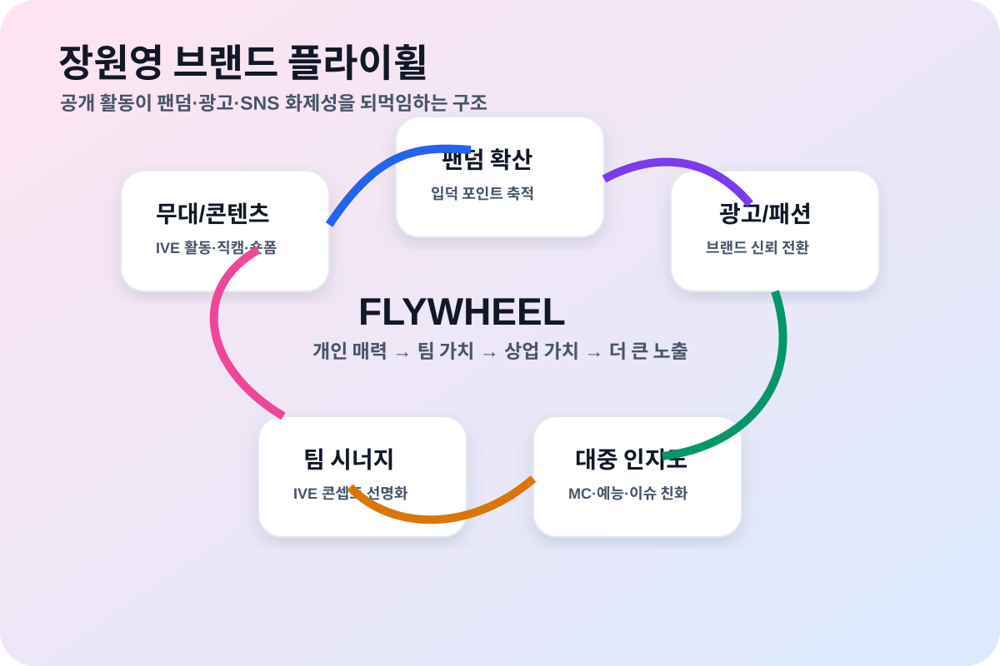
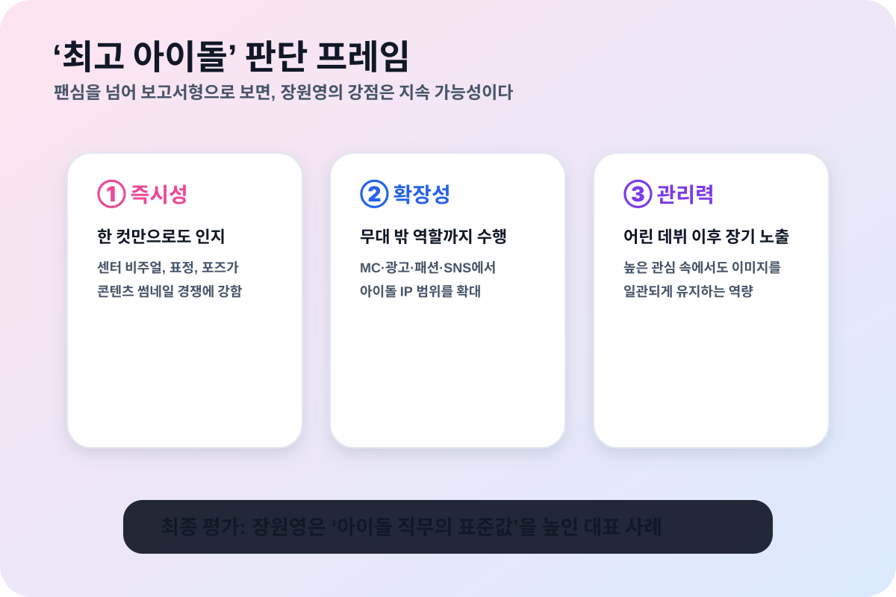

왜 장원영이 최고의 아이돌인지 심층 분석

핵심 결론
- 장원영이 “최고의 아이돌”이라는 평가는 객관적 순위 단정이라기보다, 센터성·무대력·브랜드성·화제성·관리력을 함께 보는 평가 관점에서 가장 설득력이 크다.
- 그의 강점은 예쁜 외모 하나가 아니라, 한 컷의 즉시 인지도 → 무대 집중도 → 광고/패션 신뢰 → SNS 확산 → 팀 IVE의 콘셉트 강화로 이어지는 구조다.
- 특히 어린 나이부터 오디션, 프로젝트 그룹, 재데뷔 그룹, MC, 광고 모델을 거치며 장기 노출을 견딘 점은 아이돌 산업에서 희소한 경쟁력이다.
1. ‘최고’의 기준을 먼저 정의해야 한다
아이돌 평가는 팬덤 취향이 크게 작동한다. 그래서 “누가 절대 1등인가”보다, 어떤 기준으로 최고를 말하는지가 중요하다. 이 보고서는 다음 5개 기준으로 장원영을 본다.
| 평가 축 | 의미 | 장원영에게 유리한 이유 |
|---|---|---|
| 센터성 | 팀과 무대의 첫인상을 잡는 힘 | 시선이 자연스럽게 모이는 비주얼, 표정, 포즈가 강하다 |
| 무대력 | 노래·안무·표정·카메라 대응의 종합 | 직캠과 숏폼에서 짧은 순간을 콘텐츠화하는 능력이 좋다 |
| 브랜드성 | 광고주가 선택할 수 있는 이미지 안정성 | 깨끗함, 고급스러움, 선망성을 동시에 전달한다 |
| 화제성 | 대중이 반복해서 언급하는 힘 | 말투, 포즈, 스타일링, 밈이 계속 재생산된다 |
| 관리력 | 높은 관심을 장기적으로 견디는 능력 | 어린 데뷔 이후에도 이미지와 활동 폭을 유지했다 |
이 기준으로 보면 장원영은 특정 한 영역의 스페셜리스트라기보다, 아이돌에게 요구되는 여러 능력을 높은 평균값으로 묶어내는 타입이다. 그래서 “완성형 아이돌”이라는 평가가 자주 붙는다.
2. 센터성: 한 컷으로 팀의 세계관을 설명한다
장원영의 가장 큰 자산은 센터성이다. 센터성은 단순히 가운데에 서는 것이 아니라, 무대와 사진 한 장에서 팀의 콘셉트를 가장 빠르게 이해시키는 능력이다.
IVE의 핵심 이미지는 자기 확신, 선망성, 세련됨에 가깝다. 장원영은 이 이미지를 표정·자세·스타일링으로 빠르게 전달한다. 특히 카메라가 짧게 스쳐도 “장면의 주인공”처럼 보이게 만드는 능력이 강하다. 이는 숏폼 시대에 매우 중요하다. 요즘 아이돌 콘텐츠는 3분 무대보다 3초 클립에서 먼저 소비되는 경우가 많기 때문이다.
3. 무대력: 과잉보다 정확한 카메라 대응
장원영의 무대 강점은 폭발형 퍼포먼스보다 카메라 친화형 퍼포먼스에 있다. 큰 동작으로 압도하기보다, 표정 전환과 포즈의 끝처리를 통해 장면을 완성한다.
이 방식은 호불호가 있을 수 있다. 하지만 음악방송, 직캠, 숏폼, 광고형 콘텐츠가 결합된 현재 K팝 환경에서는 매우 실용적인 강점이다. 팬은 무대 전체를 보기도 하지만, 동시에 특정 멤버의 짧은 장면을 저장하고 공유한다. 장원영은 그 짧은 장면을 “다시 보고 싶은 컷”으로 만드는 데 능하다.

4. 브랜드성: 광고주가 원하는 ‘안전한 선망’
장원영의 브랜드성은 대중성과 프리미엄 이미지를 동시에 가진다는 점에서 강하다. 광고 모델에게 중요한 것은 유명세만이 아니다. 브랜드가 전달하고 싶은 감정과 모델의 이미지가 충돌하지 않아야 한다.
장원영은 화려하지만 과하게 부담스럽지 않고, 젊지만 가볍게만 소비되지 않는다. 이 균형 때문에 뷰티, 패션, 식품, 라이프스타일 영역에서 활용도가 높다. 공식·대중 공개 자료 기준으로도 innisfree는 2021년 장원영을 글로벌 브랜드 앰버서더로 선정했다고 발표했다. 이런 사례는 그의 이미지가 팬덤 내부를 넘어 상업 시장에서도 작동했음을 보여준다.
5. 화제성: 밈이 되는 사람은 산업의 주목을 끈다
장원영은 긍정·부정 이슈를 모두 포함해 대중의 언급량이 높은 인물이다. 여기서 핵심은 모든 반응이 호평이라는 뜻이 아니라, 계속 해석되고 재생산되는 인물이라는 점이다.
아이돌 산업에서 화제성은 리스크이면서 자산이다. 과도한 관심은 피로도를 만들 수 있지만, 잘 관리되면 팀의 신곡·광고·콘텐츠 노출을 증폭한다. 장원영의 경우 포즈, 말투, 헤어·메이크업, 공항패션, 무대 표정 등이 반복적으로 소비된다. 이는 단순 팬덤 소비를 넘어 “대중이 알아보는 아이돌”의 조건에 가깝다.
6. 팀 IVE와의 시너지: 개인 인지도와 팀 콘셉트가 맞물린다
최고의 아이돌은 혼자 빛나는 데서 끝나지 않는다. 팀의 방향성을 선명하게 만드는 역할도 해야 한다. 장원영은 IVE가 가진 자기 확신형 콘셉트와 잘 맞는다.
IVE는 데뷔 이후 “내가 원하는 나”를 강조하는 이미지로 성장했다. 장원영의 공개 이미지는 이 방향과 자연스럽게 연결된다. 따라서 장원영의 개인 인지도는 팀을 가리는 요소가 아니라, 팀 콘셉트를 빠르게 이해시키는 입구로 작동한다.
7. 반론도 있다: 최고라는 말이 불편할 수 있는 이유
장원영을 최고로 평가할 때 주의할 점도 있다.
- 보컬·댄스·랩 같은 개별 기술만 놓고 보면 다른 아이돌을 더 높게 평가하는 팬도 충분히 있다.
- 높은 화제성은 동시에 악성 댓글과 과잉 해석을 부른다.
- “완벽한 이미지”가 강할수록 인간적인 서사나 음악적 성장 서사가 덜 보인다고 느끼는 사람도 있다.
하지만 이 반론은 오히려 장원영의 위치를 설명한다. 모두가 무관심한 인물에게는 이런 논쟁도 생기지 않는다. 장원영은 호불호를 포함해 대중이 계속 평가하려는 대상이며, 이 자체가 톱 아이돌의 조건이다.

8. 최종 판단
장원영이 최고의 아이돌인지에 대한 답은 “어떤 능력을 아이돌의 핵심으로 보느냐”에 따라 달라진다. 순수 보컬, 순수 댄스, 자작곡 역량만 기준으로 삼으면 다른 답이 나올 수 있다.
그러나 현대 K팝 아이돌을 무대 아티스트 + 콘텐츠 IP + 광고 모델 + 대중문화 아이콘의 결합체로 본다면, 장원영은 최고 후보가 아니라 최고를 논할 때 반드시 가장 앞줄에 세워야 하는 인물이다.
한 문장으로 정리하면 다음과 같다.
장원영은 예쁜 아이돌을 넘어, 2020년대 K팝이 요구하는 ‘보이는 능력·팔리는 이미지·공유되는 순간’을 동시에 구현한 대표 사례다.
공개 출처 및 참고 범위
- IVE 공식 사이트: https://ive-official.com/
- Starship Entertainment 공식 채널/IVE 공개 프로필 및 활동 공지: https://www.starship-ent.com/
- Amorepacific 공식 보도자료, innisfree Selects Jang Won-young as Global Brand Ambassador: https://www.apgroup.com/int/en/news/2021-07-27.html
- Mnet/Produce 48 공개 기록 및 대중 공개 백과 자료: https://en.wikipedia.org/wiki/Produce_48
- Jang Won-young 공개 인물 정보: https://en.wikipedia.org/wiki/Jang_Won-young
- IVE 공개 인물/활동 정보: https://en.wikipedia.org/wiki/Ive_(group)
※ 본문은 공개 웹과 공개적으로 알려진 활동 이력만 사용했다. “최고”라는 표현은 절대 순위 확정이 아니라, 위 평가 기준에 따른 분석적 판단이다.